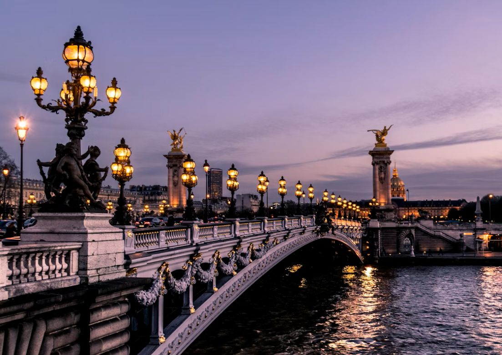
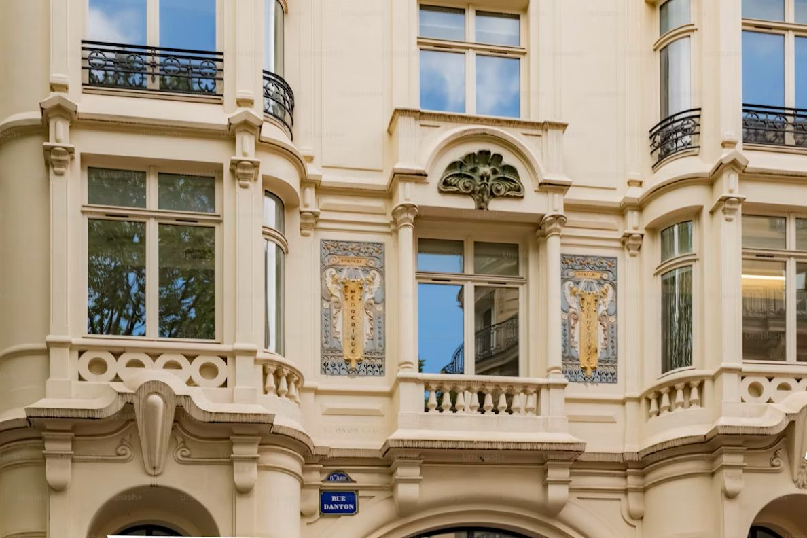

Welcome to Anshika's Travel Blog
Tokyo


🌸 Tokyo is a dazzling fusion of tradition and technology—where ancient temples sit beside neon-lit skyscrapers.
🚄 It’s the world’s most populous metropolis, yet remarkably orderly, with the busiest train station on Earth: Shinjuku.
🎌 From cherry blossoms to capsule hotels, Tokyo offers a sensory overload that’s both serene and electrifying .
Tokyo at a glance
- Capital of Japan : Tokyo is the political, economic, and cultural heart of the country.
- Population: Over 14 million in the city proper, and around 41 million in the Greater Tokyo Area—making it the most populous metropolitan region in the world
- History: Formerly known as Edo, it became Tokyo (“Eastern Capital”) in 1868 when the emperor moved the capital from Kyoto.
Fun Activities
- Tokyo Skytree : Ascend the tallest tower in Japan for panoramic views. On clear days, you can even spot Mt. Fuji.
- Senso-ji Temple : Tokyo’s oldest temple, rich in history and surrounded by traditional markets
- Shibuya Crossing : Experience the world’s busiest pedestrian scramble—chaotic, iconic, and oddly satisfying
Paris



Paris, the City of Light , dazzles with its timeless charm—from the Eiffel Tower’s sparkle to the cobbled streets of Montmartre .
🎨 It’s a haven for artists and dreamers , where every café corner whispers stories of Hemingway, Picasso, and Chanel .
🥐 With buttery croissants , haute couture , and poetic bridges over the Seine , Paris is not just a city—it’s a mood .
Paris at a glance
- Original name : Paris was once called Lutetia Parisiorum, founded by the Parisii tribe around 300 BC .
- Roman Roots : The Romans occupied Paris in the 1st century BCE and built bathhouses—some ruins still exist today .
- Point Zero : All road distances in France are measured from a plaque in front of Notre-Dame Cathedral , known as “Point Zero” .
Fun activities
- Dark Dream Paris : Navigate a 1200m² haunted maze in total darkness, solving puzzles and facing eerie creatures . It’s part escape room , part live horror show .
- Perpette Immersive Theater : Step into a 1960s prison-themed play where you’re part of the story—complete with a cocktail bar for post-performance mingling .
- Beer Spa : Soak in a warm bath infused with hops , malt , and brewer’s yeast . It’s relaxing , skin-friendly , and totally Instagrammable .
Budapest


Budapest , the capital of Hungary , is a stunning fusion of history and modernity , split by the majestic Danube River into Buda and Pest .
💧 Known as the "City of Spas" it boasts world-famous thermal baths like Széchenyi and Gellért , drawing wellness seekers from around the globe .
🌉 Its iconic Chain Bridge , grand Parliament building , and vibrant ruin bars make it one of Europe’s most enchanting and eclectic cities .
Budapest at a glance
- Buda + Pest = Budaapest : The city was formed in 1873 by merging three towns—Buda , Pest , and Óbuda .
- Hungarian Parliament Building : One of the largest and most beautiful in the world , it sits majestically on the Danube’s banks .
- Chain Bridge: Completed in 1849 , it was the first permanent bridge connecting Buda and Pest .
Fun activities
- Labyrinth : Venture beneath Castle Hill into a fog-filled maze where Count Dracula was once imprisoned . It’s eerie , historic , and totally unique .
- Ferris Wheel of Budapest : Located in Erzsébet Square , this giant wheel gives you sweeping views of the city’s skyline—especially magical at sunset .
- Mystique Room : One of Budapest’s most popular escape room centers , offering immersive storylines and clever challenges that’ll test your teamwork and logic .
Click here to go to the top of the page .